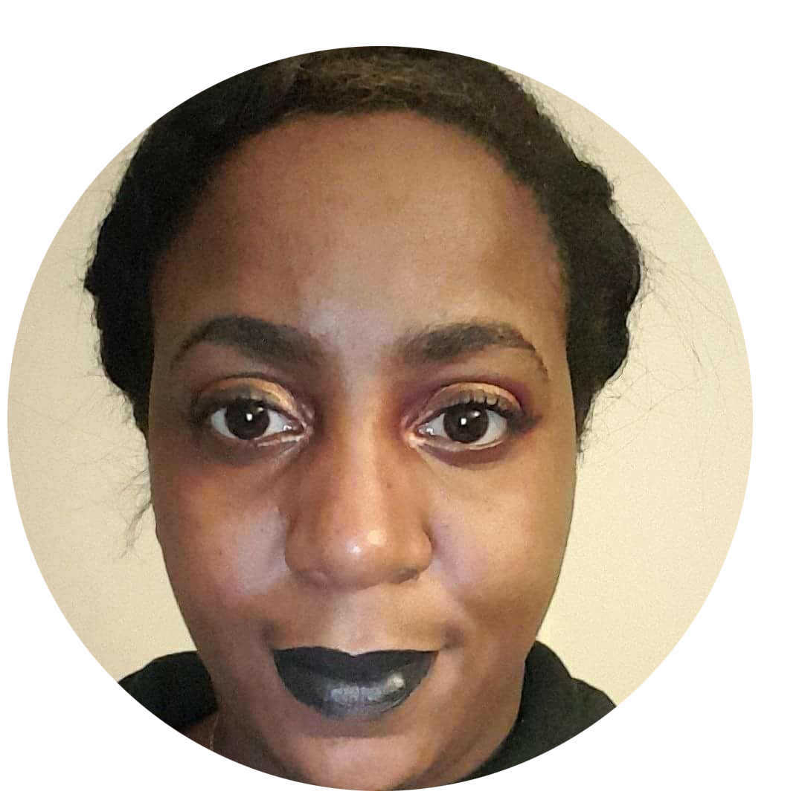

Makeda McLean | Graphic Designer
I truly believe that I am a mild perfectionist when it comes to some things. I aspire to be a Website designer/Software Developer. I find writing code is very structural and accurate like math which I enjoyed in high school. I found that ever since I was introduced to some form of code I felt that would be something I would never get tired of doing.